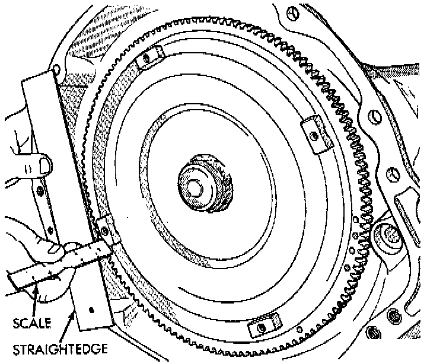

Torque Converter: Service and Repair
REMOVAL1. Remove transmission and torque converter from vehicle.
2. Place a suitable drain pan under the converter housing end of the transmission.
CAUTION:
- Verify that transmission is secure on the lifting device or work surface, the center of gravity of the transmission will shift when the torque converter is removed creating an unstable condition.
- The torque converter is a heavy unit. Use caution when separating the torque converter from the transmission.
3. Pull the torque converter forward until the center hub clears the oil pump seal.
4. Separate the torque converter from the transmission.
NOTE: Check converter hub and drive notches for sharp edges, burrs, scratches, or nicks. Polish the hub and notches with 320/400 grit paper or crocus cloth if necessary. The hub must be smooth to avoid damaging the pump seal at installation.

INSTALLATION
1. Lubricate converter hub and oil pump seal lip with transmission fluid.
2. Place torque converter in position on transmission.
CAUTION: Do not damage oil pump seal or bushing while inserting torque converter into the front of the transmission.
3. Align torque converter to oil pump seal opening.
4. Insert torque converter hub into oil pump.
5. While pushing torque converter inward, rotate converter until converter is fully seated in the oil pump gears.
6. Check converter seating with a scale and straightedge. Surface of converter lugs should be 1/2 inch to rear of straightedge when converter is fully seated.
7. If necessary, temporarily secure converter with C-clamp attached to the converter housing.
8. Install the transmission in the vehicle.
9. Fill the transmission with the recommended fluid.